Lab Objectives: Upon completion of this lab, you will be able to:
Configure the InSightApp
Use the InSightApp for historical trending
Introduction
In this lab, you will use the InSightApp to add a display for historical trending in your ViewApp. You will configure the InSightApp to retrieve relevant information from Historian. When testing, you will be able to use different tools to view data and alarm-related information through the InSightApp.
For example, you will be able to zoom, pan, and extend the trend display based on the time range. You will be able to move your mouse over the trend line to view data based on the cursor position on the line, and click the highlighted part of the line to view alarm information. You will also be able to view the data in different units of measure.
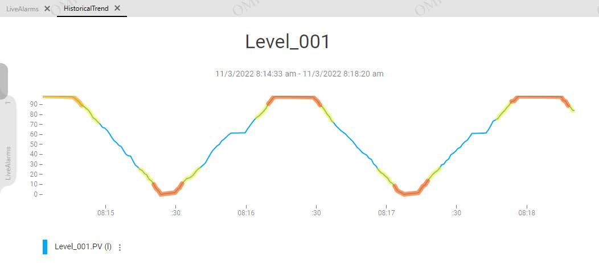
The InSightApp trend display showing historical data for Level_001 with LiveAlarms and HistoricalTrend tabs in the bottom-left pane
Create a Layout and Add the InSightApp
In the following steps, you will create a new layout, add the InSightChartControl to a pane, and configure properties for the control.
On the Graphics tab, in the Training \ Layouts toolset, create a new layout and name it HistoricalTrend.
Double-click HistoricalTrend to open it in the Layout Editor.
On the Toolbox tab, enter a search string to find the InSightChartControl and drag the control to Pane1.
On the Properties tab, configure properties as follows:
Chart Configuration \ Historian InSight Server URL: http://<Historian node name>:32569
Chart Configuration \ Chart Duration: 5
Save and close the HistoricalTrend layout, and check it in.
Note: Your instructor will provide the Historian node name. The example above uses S00ENG for the Historian node name.
InSightChartControl Properties pane configured with the Historian InSight Server URL and Chart Duration of 5 minutes
Associate HistoricalTrend to a Navigation Item
Now you will assign the HistoricalTrend layout to the tabbed pane in the ViewApp Editor and associate the Plant navigation item to it.
In the ViewApp Editor, in the Navigation list, select Plant.
On the Toolbox tab, enter a search string to find the HistoricalTrend layout and drag it to Pane8.
You can verify that HistoricalTrend is assigned to Pane8 from the Actions list.
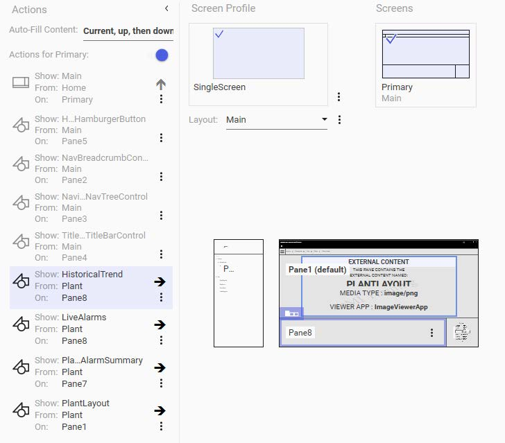
ViewApp Editor with Plant navigation selected, showing HistoricalTrend layout assigned to Pane8 in the Actions list
Test the ViewApp in a Preview Session
Now you will test your changes in the ViewApp preview session.
Click Update to update the preview session. Notice that <domain>\jamess is still logged in and the preview is navigated to Plant. Also notice the bottom-left pane has two tabs: LiveAlarms and HistoricalTrend.
Click the HistoricalTrend tab. Notice that the InSightChartControl refreshes, but the control indicates that no historized attributes match.
Tip: The message "No historized attributes match your search" appears because the Plant level asset does not contain historized tag attributes matching the configured keywords. You need to navigate deeper to an asset that has historized data.
View Historical Trend Data
Navigate to Production Lines \ Line1 \ Mixer100 \ Level_001.
In the bottom-left pane, click the HistoricalTrend tab.
Hover your mouse over the divider between the pane with the Level_001 graphic and the tabbed pane, and move the divider up to get a better view of the historical trend.
Notice that the trend appears in the pane, including some alarm-related information for Level_001. The yellow highlights indicate Severity 2 alarms for the attribute and the red highlights indicate Severity 1 alarms. You can double-click on the trend to zoom in, and you can also use the mouse wheel to zoom in and out.
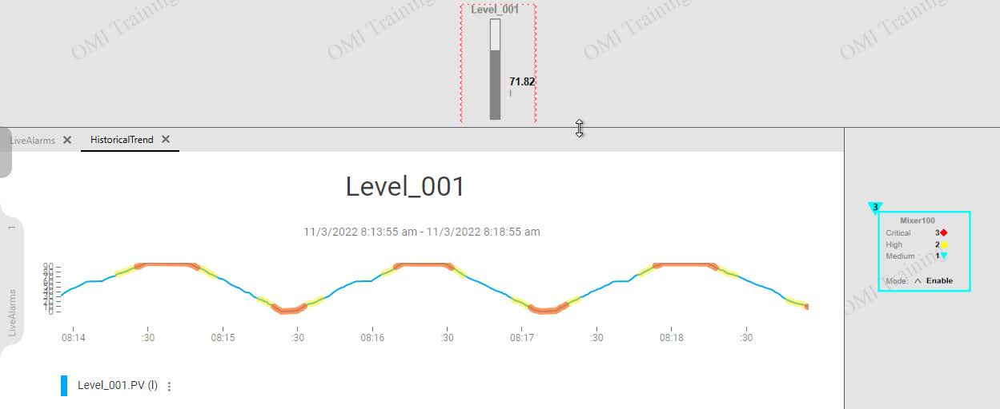
Historical trend for Level_001 displaying alarm information: yellow highlights for Severity 2 and red for Severity 1
Zoomed-in view of the Level_001 trend after double-clicking, showing a narrower time range with detailed alarm segments
Explore Trend Interaction Features
Move your mouse over the trend. Data displays for the date and time, based on the position of the cursor on the trend line. Notice that the units of measure used for the data is l (liters), which is configured with the historized attribute in the object.
At the bottom-left of the InSightControl, click the ellipsis button in the Level_001.PV legend to display a popup menu of units of measure.
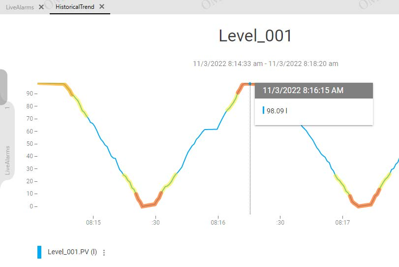
Hovering over the trend displays a tooltip with the exact timestamp and value at the cursor position
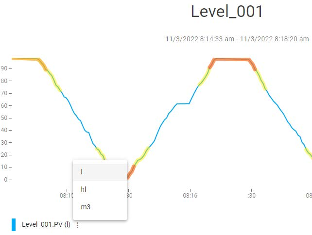
The ellipsis button reveals a popup menu with available units of measure: l (liters), hl (hectoliters), and m³ (cubic meters)
Convert Units of Measure
Select m3 to convert the units used for the trend from liters to cubic meters. Notice the legend indicates the units of measure for the data is m³, and the Y-axis values display cubic meter values.
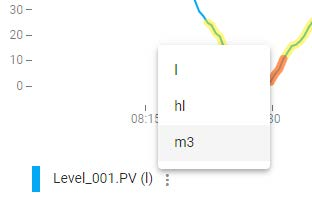
After selecting m³, the trend converts all data to cubic meters — the legend and Y-axis values update to reflect the new unit
Move your mouse over the trend. Data now displays in units of m³.
Click the ellipsis button again and switch the units of measure for the trend data back to l.
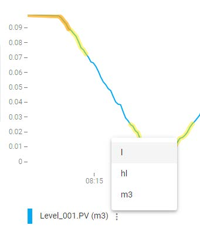
Using the unit selection menu to switch the trend data display back to liters from cubic meters
View Alarm Information
Click a red highlighted area on the trend line. Alarm data displays, based on the cursor position on the trend line.
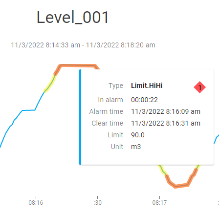
Clicking a red alarm region displays detailed alarm information: type (Limit.HiHi), duration, alarm time, clear time, and limit value
Use the Floating Toolbar
Hover your mouse over the time line at the bottom of the trend chart, and notice a floating toolbar appears. The toolbar includes tools to expand the display left or right, pan left or right, and zoom.
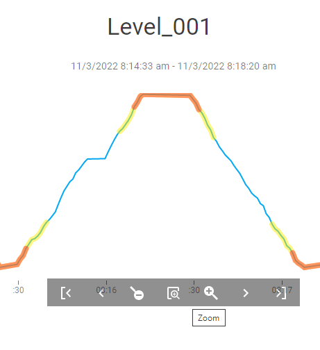
The floating toolbar appears when hovering over the x-axis, providing Zoom, Pan, and Expand controls for navigating the trend
Use the floating toolbar to perform the following for the trend chart:
Zoom in and out
Pan left and right
Expand left and right
Note: When the duration of the chart exceeds 5 minutes, the colored alarm highlights are replaced by markers indicating the start and end points of each alarm limit.
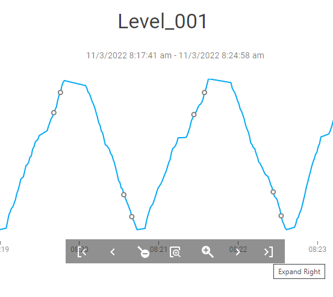
When the chart duration exceeds 5 minutes, alarm highlights are replaced by start/end markers on the trend line
Test Additional Assets
Navigate to Agitator_001, and then click the HistoricalTrend tab to view its trends. Notice the agitator motor state, boolean attribute PV, is displayed at the bottom of the chart as a thick blue square wave form indicating the periods in which the motor is running and stopped.
Navigate to other objects, and then click the HistoricalTrend tab to view different trends. For example, you can navigate to:
Temperature_001
TT1_001 (contained in the Packaging \ HeatEx100 object)
When you are finished testing, minimize the preview session and the ViewApp Editor.
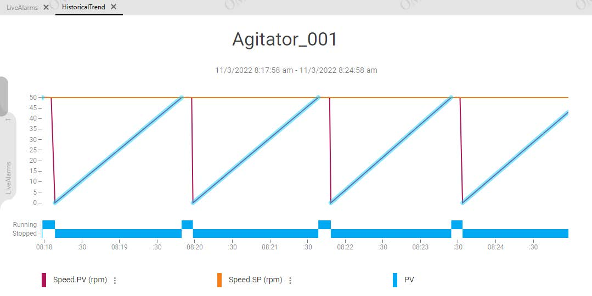
Agitator_001 trend displaying Speed.PV (triangular wave), Speed.SP (setpoint line), and the boolean motor state (square wave indicating running/stopped periods)
<End of Lab>
Knowledge Check
Q1: What must you configure on the InSightChartControl Properties tab before saving the layout?
You must configure the Historian InSight Server URL (e.g., http://S00ENG:32569) and the Chart Duration (e.g., 5 minutes).
Q2: Why does the HistoricalTrend tab initially show "No historized attributes match your search" when navigating to Plant?
The Plant-level asset does not contain historized tag attributes that match the configured keyword filter (PV, SP, CV). You must navigate to a deeper asset that has historized data, such as Level_001 under Mixer100.
Q3: How can you change the unit of measure displayed on the InSightApp trend?
Click the ellipsis button next to the pen name in the legend at the bottom of the trend. This reveals a popup menu with available units of measure (e.g., l, hl, m³). Select a different unit to convert the displayed data.
Q4: What happens to alarm highlights when the chart duration exceeds 5 minutes?
The colored alarm highlights (yellow for Severity 2, red for Severity 1) are replaced by markers indicating the start and end points of each alarm limit.
Q5: What does the boolean PV attribute look like when trended for Agitator_001?
It appears as a thick blue square wave at the bottom of the chart, indicating periods when the motor is running (high) and stopped (low).